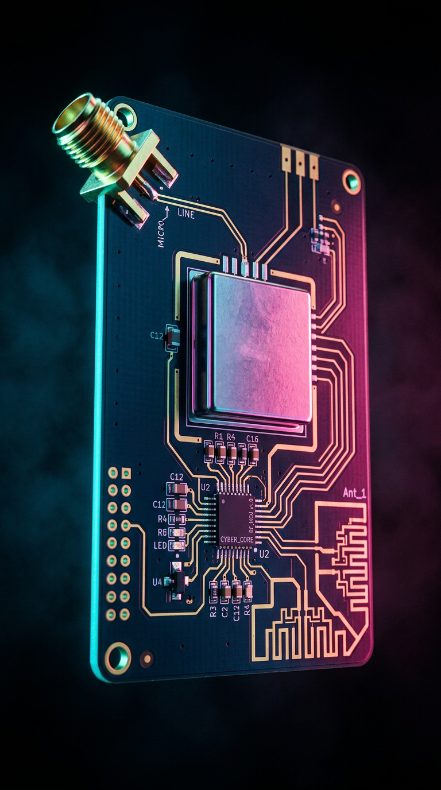
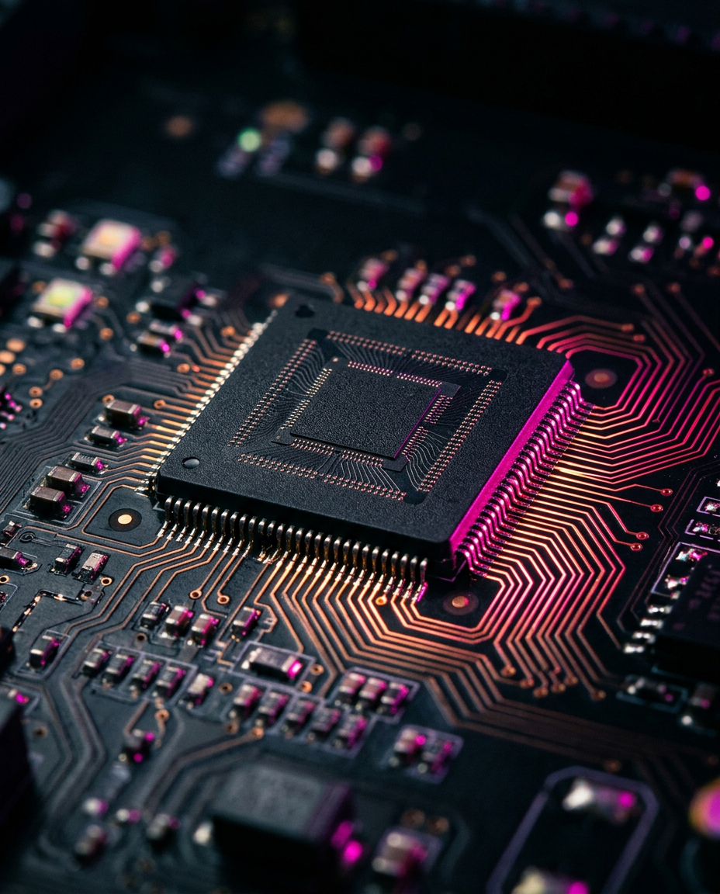
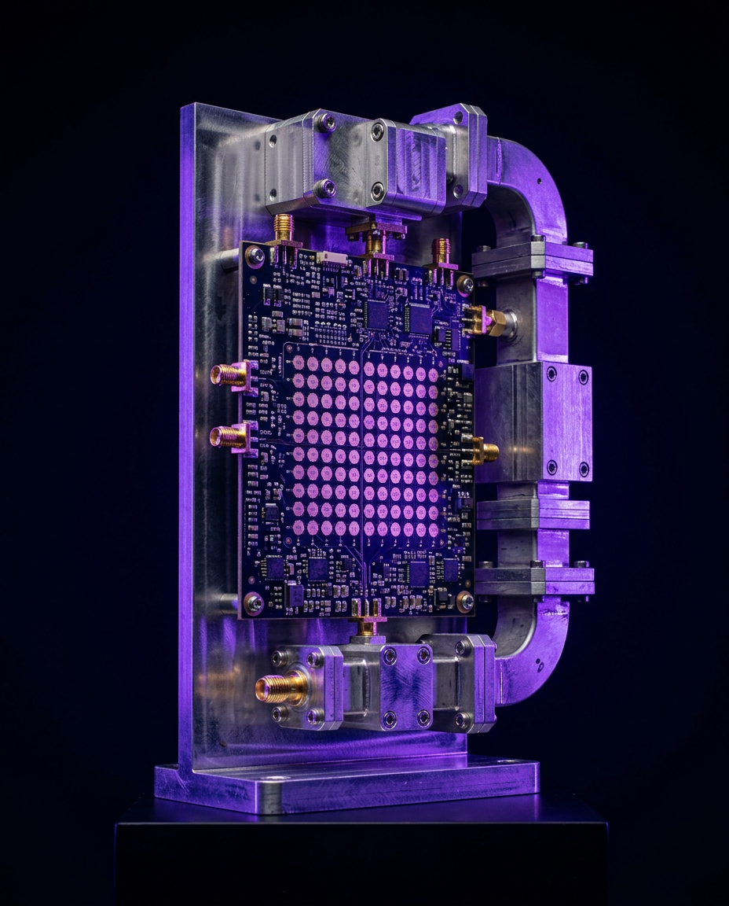

Zero Scaling • Pure Opacity Crossfade • Continuous Vertical Scroll



01 // RF · FRONT-END
Bridging physical analog potentials to deterministic firmware and physical telemetry.
Planar patch array antenna frontend with 50-Ohm matched microstrip feedlines.